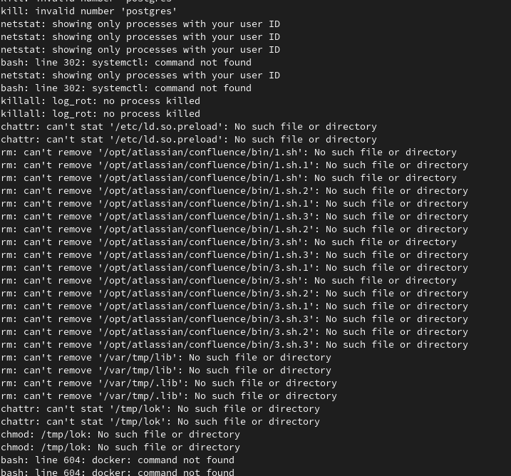

Happy new years! Or so I thought. After a refreshing christmas vacation with my family, I was just stashing something away in our storage room when I noticed the server fan running at maximum. This was very unexpected considering my server is running an Intel i3, and should handle all the light tasks I run quite effortlessly. Anyways, I continued the day of unpacking and didn't think much more of it. Today while running a simulation on my laptop, the fan noise made me remember my earlier observation, and I SSH'ed in to my server to check the status.
To my surprise, when running htop, I saw two processes running at 100% CPU utilization named kdevtmpfsi. Upon reading the first couple of search results, I was baffeled. I had fallen victim for a known malware called Kinsing, which was most likely running crypto mining activities on full blast on two cores on my server. This had been going on for 400 hours+ according to htop.
I quickly searched what might have been the cause of this, and found that there seems to be an exploit for unprotected and exposed docker containers. This was somewhat releiving, as the latest change I had done, was to spin up a postgres_alpine container in Docker right before the holidays to have it available for some personal project while away. This database was then exposed to the internet, with open ports in the router firewall and everything. None of the database guides I followed had warned me about the dangers of exposing a docker containerized database to the internet. Ofcourse I password protected it, but seeing as it was not going to be permanent, I didn't dive further into how to secure it.
Anyways, despite the scary log entries showing that it had been trying to change privileges and delete what is often critical folders on a system, it was all contained within the container. And luckily for me, the kdevtmpfsi processes were killed when I stopped the postgres_alpine container.
However, when checking my system logs, I found that someone has been trying to brute force their way into my server. A quick IP search reveal that the IP is from the Russian Federation. Although I believe it wasn't an immediate threat, I decided to close access to my home network both for VPN and SSH connections to my server which I had opened earlier for ease of access to my powerful desktop computer and server configuration. This results in no ports being open on my home network anymore, and I also checked my UPnP and DMZ settings to make sure that nothing was open too.
With this, I hope to rest more easily. But to those of you who have not had this seanse yet: Be careful with exposing your home setup to the internet! I am at least absolutely sure that I will make sure that the next time I expose something to the internet, I am sure that it is as safe as can be.